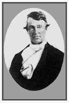
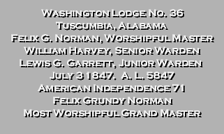

FELIX GRUNDY NORMAN, lawyer, was born January 4, 1808, near Smyrna, Rutherford County, Tenn. and died August
5, 1885 at Tuscumbia [Alabama]; son of John and Margaret [Stockird] Norman who lived at Smyrna. He was denied
early educational advantages, but was taught in the rudiments by an older brother. He began life as a merchant
but later taught school for several years. He studied under William Casper, was admitted to the bar in Tuscumbia
in the early thirties, and practiced at that point and the surrounding country until his death. He was mayor of
Tuscumbia for many years, and represented his county in the legislature for sessions of 1841, 1842, 1844, 1845
and 1847-8, inclusive. Although he supported the Confederacy with his means and influence, he was debarred from
active participation on account of his age. He was a Democrat; a Presbyterian; and a Mason. Married: August 17,
1848 at Dickson, to Jane Lavina, daughter of Henry and Jane [Shelton] Cook of Spotsylvania County, Va., residents
for some years of Huntsville, later locating in Tuscumbia where they spent the remaining years of their lives, the
former for some time government agent for the disposition of Indian lands. Children: 1. John Henry; 2.
Felix Grundy, m. Della Phares, Salinas, Calif.; 3. Mary Barton, m. John R. Charlton, La Verge, Tenn.;
4. Kate Cook, m. Hall S. Kirkpatrick; 5. Thomas Edgar, m. Lee Ellis, Memphis; 6. James Beverly, last
residence: Tuscumbia.
Bibliography
Source: History of Alabama and Dictionary of Alabama Biography, Vol. IV. by Thomas McAdory Owen, Chicago: S.
J. Clarke Publishing Co., 1921.

Biography
of Felix Grundy Norman, Sr., 1808-1885
FELIX G. NORMAN, of Franklin
[County Alabama], was born and educated in Tennessee. He represented Franklin for the first time
at the session of 1841, and by continuous elections, he served in the House until the close of the session of
1847-8, since which time he has been in private life, engaged in the practice of law. While in the Legislature,
Col. Norman was a very efficient member, both in debate and in Committees. He was a Democrat from honest conviction,
and never departed from that faith, but always kept himself in the path of duty according to the best of his judgment.
Acting on principle, he opposed at every step the resolutions of the General Assembly accepting Alabama’s portion
of the proceeds of the public lands. In the same manner, he opposed what he considered the improper identity in the
same resolution, on the Constitutional amendment providing for biennial sessions of the Legislature, and for the
removal of the Seat of Government at the session of 1845. In all this, he only yielded to a sense of duty, to
prevent injustice, or an unsafe precedent. However laudable his purpose, he course on the question of removal
resulted to his injury, through influences subsequently brought to bear against him, in a political sense.
For many years, Col. Norman was Grand High Priest and Grand Master of the Masonic fraternity of Alabama,
who presented him, on his retirement, appropriate medals, commemorating his services to the craft.
From his bearing in the Legislature, the courtesy he always exhibited in debate, the intelligence with which
he handled questions, and the ease and graceful elocution which seemed natural to him, Col. Norman was unquestionably
cast in a large intellectual mould, capable of expansion beyond the limits within which it was his fortune to be
confined as a political aspirant. Although rigid in the tenets of his party, and at times somewhat acrimonious under
provocation, he was not blind to the merits of a measure because it may have originated with his opponents. He was
bold and fearless, often displaying the gallantry of ancient knighthood in the legislative arena, shivering a lance
with friend or foe without personal malice. His face was luminous with good feeling, and his whole deportment was
that of a gentleman sensible of the rights of others, and careful of his own, in all that relates to the substantial
etiquette of life. Had his lot permitted a more congenial opening for the development of his character after the
inward model, there is no doubt that Col. Norman would have filled a large space before the public, and achieved
a reputation as proudly National as that which he now enjoys is, in local view, distinguished for ability and honor.
Perhaps the greatest obstacle to his advancement to higher places has been a certain measure of self-respect and
honorable sensibility, which made intrigue and management the usual medium of success repugnant to his nature. He
has abundant reason, however to be satisfied with the result, in his own high and unimpeachable character. He is
still in the meridian of life, and he resides in Tuscumbia.
Bibliography
Source: Reminiscences of Public Men in Alabama, by William Garrett, Atlanta, GA:
Plantation Publishing Press, 1872.


Bibliography
Source: Two Hundred Years at Muscle Shoals, by Nina Leftwich, Tuscumbia, Alabama, 1935:
When the cornerstone of the new 1847 Tuscumbia Masonic building was put down, a engraved cooper plaque was placed
inside the stone. Text of plaque in graphic above.
See the biography of Felix Grundy Norman’s brother, John Norman.
Search words: Lewis G. Garrett, William Harvey. Joseph Whitsett, Joseph Whitsitt,
(J. W. was second husband of Margaret Stockird Norman - mother of Felix G. Norman, Sr.). Grand Lodge F & A M of
Alabama.
|